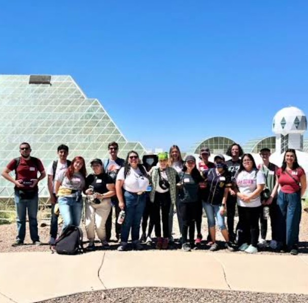

Cunningham, C. J., Guertin, A., Gelin, M., Derry, L. A., Bauser, H. H., Kim, M., Druhan, J. L., Saleska, S., Troch, P. A., Chorover, J. (2025): Carbon dioxide removal during dissolution of granular basalt: A mass balance test of enhanced rock weathering at the hillslope scale, *Earth and Planetary Science Letters, 671: 119662.* DOI: 10.1016/j.epsl.2025.119662 (DOI / source)

Research
Publications
A research publication archive for Biosphere 2 systems, the Landscape Evolution Observatory, rainforest, ocean, and related programs.
Research Archive
Searchable publications by system
Browse Biosphere 2 publications by research area, year, author, DOI, and dataset source.
6Sections
1990s+Archive span
DOISource links
Published Dataset Repositories
Trusted data homes
Dataset sources are grouped separately from publication text so repository brands remain readable and proportional.
HydroShare
CyVerse
figshare
PANGAEA
Zenodo
UA Research Data
Landscape Evolution Observatory Publications
2025
2024
Guertin, A., Cunningham, C., Bouchez, J., Gelin, M., Chorover, J., Bauser, H., Kim, M., Troch, P., Derry, L. A., Druhan, J. L. (2024): Stable silicon isotope fractionation reflects the routing of water through a mesoscale hillslope. *Earth and Planetary Science Letters, 648: 119098*. DOI: 10.1016/j.epsl.2024.119098 (DOI / source)
Guertin, A., Cunningham, C., Bouchez, J., Gelin, M., Chorover, J., Bauser, H., Kim, M., Troch, P., Derry, L. A., Druhan, J. L. (2024): Stable silicon isotope fractionation reflects the routing of water through a mesoscale hillslope (dataset). *HYDROSHARE*. DOI: 10.4211/hs.e631d6807c464f52b700cd5d9e4fbb43 (DOI / source)
Milici, V. R., Abiven, S., Bauser, H. H., Bishop, L. G., Bland, R. G. W., Chorover, J., Dontsova, K. M., Dyer, K., Friedman, L., Rusek-Peterson, M. J., Saleska, S., Dlugosch, K. M. (2024): The Effects of Plant–Microbe–Environment Interactions on Mineral Weathering Patterns in a Granular Basalt. *Geobiology, 22(6): e70004*. DOI: 10.1111/gbi.70004 (DOI / source)
2023
Kim, M., Bauser, H. H., Beven, K., & Troch, P. A. (2023): Time-variability of flow recession dynamics: Application of machine learning and learning from the machine. *Water Resources Research, 59: e2022WR032690*. DOI: 10.1029/2022WR032690 (DOI / source)
2022
Bauser, H. H., Kim, M., Ng, W.-R., Bugaj, A., & Troch, P. A. (2022): Richards equation at the hillslope scale: Can we resolve the heterogeneity of soil hydraulic material properties? *Earth and Space Science Open Archive*. DOI: 10.1002/essoar.10510743.1 (DOI / source)
Kim, M., & Harman, C. J. (2022): Transit Times and Storage Selection Functions in Idealized Hillslopes with Steady Infiltration. *Water Resources Research, 58: e2019WR025917*. DOI: 10.1029/2019WR025917 (DOI / source)
Kim, M., Volkmann, T. H. M., Wang, Y., Meira Neto, A. A., Matos, K., Harman, C. J., & Troch, P. A. (2022): Direct observation of hillslope scale StorAge Selection functions in experimental hydrologic systems: Geomorphologic structure and preferential discharge of old water. *Water Resources Research, 58: e2020WR028959*. DOI: 10.1029/2020WR028959 (DOI / source)
Meira Neto, A. A., Kim, M., & Troch, P. A. (2022): Physical interpretation of time-varying StorAge Selection functions in a bench-scale hillslope experiment via geophysical imaging of ages of water. *Water Resources Research, 58: e2021WR030950.* DOI: 10.1029/2021WR030950 (DOI / source)
Wang, C., Liu, G., McNew, C.P., Volkmann, T.H.M., Pangle, L., Troch, P.A., Lyon, S.W., Kim, M., Huo, Z., Dahlke, H.E. (2022): Simulation of experimental synthetic DNA tracer transport through the vadose zone. *Water Research, 223: 119009.* DOI: 10.1016/j.watres.2022.119009 (DOI / source)
2021
Bauser, H. H., Berg, D., Roth, K. (2021): Technical Note: Sequential ensemble data assimilation in convergent and divergent systems. *Hydrology and Earth System Sciences 25: 3319–3329*. DOI: 10.5194/HESS-25-3319-2021 (DOI / source)
Kim, M., Volkmann, T. H. M., Bugaj, A., Wang, Y., Meira Neto, A. A., Matos, K., Harman, C. J., and Troch, P. A. (2021): Uncovering the hillslope scale flow and transport dynamics in an experimental hydrologic system. *Hydrological Processes 35(8): e14337*. DOI: 10.1002/hyp.14337 (DOI / source)
Sengupta, A., Volkmann, T.H.M., Danczak, R.E., Stegen, J.C., Dontsova, K., Abramson, N., Bugaj, A.S., Volk, M.J., Matos, K.A., Meira-Neto, A.A., Barberán, A., Neilson, J.W., Maier, R.M., Chorover, J., Troch, P.A. and Meredith, L.K. (2021): Contrasting Community Assembly Forces Drive Microbial Structural and Potential Functional Responses to Precipitation in an Incipient Soil System. *Frontiers in Microbiology 12: 754698.* DOI: 10.3389/fmicb.2021.754698 (DOI / source)
2020
Dusza, Y., Sanchez-Cañete, E.P., Galliard, J.L., Ferrière, R., Chollet, S., Massol, F., Hansart, A., Juarez, S., Dontsova, K., van Haren, J., Troch, T., Pavao-Zuckerman, M.A., Hamerlynck, E., Barron-Gafford, G.A. (2020): Biotic soil-plant interaction processes explain most of hysteric soil CO2 efflux response to temperature in cross-factorial mesocosm experiment. *Scientific Reports 10: 905*. DOI: 10.1038/S41598-019-55390-6 (DOI / source)
Bauser, H. H., Riedel, L., Berg, D., Troch, P. A., Roth, K. (2020): Challenges with effective representations of heterogeneity in soil hydrology based on local water content measurements. *Vadose Zone Journal 19(1): e20040*. DOI: 10.1002/VZJ2.20040 (DOI / source)
Sengupta, A., Kushwaha, P., Jim, A., Troch, P.A., Maier, R. (2020): New Soil, Old Plants, and Ubiquitous Microbes: Evaluating the Potential of Incipient Basaltic Soil to Support Native Plant Growth and Influence Belowground Soil Microbial Community Composition. *Sustainability 12(10): 4209*. DOI: 10.3390/SU12104209 (DOI / source)
Arevalo, J., Zeng, X., Durcik, M., Sibayan, M., Pangle, L., Abramson, N., Bugaj, A., Ng, W.-R., Kim, M., Barron-Gafford, G., van Haren, J., Niu, G.-Y., Adams, J., Ruiz, J., and Troch, P. A. (2020): Highly sampled measurements in a controlled atmosphere at the Biosphere 2 Landscape Evolution Observatory. *Scientific Data 7: 306*. DOI: 10.1038/S41597-020-00645-5 (DOI / source)
Arevalo, J., Zeng, X., Durcik, M., Sibayan, M., Pangle, L., Abramson, N., Bugaj, A., Ng, W.-R., Kim, M., Barron-Gafford, G., van Haren, J., Niu, G.-Y., Adams, J., Ruiz, J., and Troch, P. A. (2020): Highly sampled measurements in a controlled atmosphere at the Biosphere 2 Landscape Evolution Observatory (dataset). *PANGAEA*, DOI: 10.1594/PANGAEA.912032 (DOI / source)
Kim, M. and Troch, P. A. (2020): Transit Time Distributions Estimation Exploiting Flow-Weighted Time: Theory and Proof-of-Concept. *Water Resources Research 56(12): e2020WR027186*. DOI: 10.1029/2020WR027186 (DOI / source)
2019
Cueva, A., Volkmann, T.H.M., van Haren, J., Troch, P.A., Meredith, L.K. (2019): Reconciling Negative Soil CO2 Fluxes: Insights from a Large-Scale Experimental Hillslope. *Soil Systems 3(1): 10*. DOI: 10.3390/SOILSYSTEMS3010010 (DOI / source)
Wang, C., McNew, C.P., Lyon, S.W., Walter, M.T., Volkman, T.H.M., Abramson, N., Sengupta, A., Wang, Y., Meira Neto, A.A., Pangle, L., Troch, P.A., Kim, M., Harman, C., Dahlke, H.E. (2019): Particle tracer transport in a sloping soil lysimeter under periodic, steady state conditions. *Journal of Hydrology 569: 61-76*. DOI: 10.1016/J.JHYDROL.2018.11.050 (DOI / source)
Sengupta, A., Stegen, J. C., Meira Neto, A. A., Wang, Y., Neilson, Tatarin, T., Hunt, E., Dontsova, K., J. W., Chorover, J., Troch, P. A., Maier, R. M. (2019): Assessing Microbial Community Patterns During Incipient Soil Formation From Basalt. *Journal of Geophysical Research: Biogeosciences 124(4): 941–958*. DOI: 10.1029/2017JG004315 (DOI / source)
2018
van den Heuvel, D. B., Troch, P. A., Booij, M. J., Niu, G.‐Y., Volkmann, T. H. M., Pangle, L. A. (2018): Effects of differential hillslope‐scale water retention characteristics on rainfall–runoff response at the Landscape Evolution Observatory. *Hydrological Processes 32(13): 2118–2127*. DOI: 10.1002/HYP.13148 (DOI / source)
Volkmann Till H. M., Aditi Sengupta, Luke A. Pangle, Katerina Dontsova, Greg A. Barron-Gafford, Ciaran J. Harman, Guo-Yue Niu, Laura K. Meredith, Nate Abramson, Antonio A. Meira Neto, Yadi Wang, John R. Adams, David D. Breshears, Aaron Bugaj, Jon Chorover, Alejandro Cueva, Stephen B. DeLong, Matej Durcik, Ty P. A. Ferre, Edward A. Hunt, Travis E. Huxman, Minseok Kim, Raina M. Maier, Russell K. Monson, Jon D. Pelletier, Michael Pohlmann, Craig Rasmussen, Joaquin Ruiz, Scott R. Saleska, Marcel G. Schaap, Michael Sibayan, Markus Tuller, Joost L. M. van Haren, Xubin Zeng and Peter A. Troch (2018): Controlled Experiments of Hillslope Coevolution at the Biosphere 2 Landscape Evolution Observatory: Toward Prediction of Coupled Hydrological, Biogeochemical, and Ecological Change. *in: Hydrology of Artificial and Controlled Experiments (eds. Jiu-Fu Liu and Wei-Zu Gu), IntechOpen, pp. 25-74*. DOI: 10.5772/INTECHOPEN.72325 (DOI / source)
2017
van Haren, J., Dontsova, K., Barron-Gafford, G. A., Troch, P. A., Chorover, J., Delong, S. B., Breshears, D. D., Huxman, T. E., Pelletier J. D., Saleska, S. R., Xeng, X., and Ruiz, J. (2017): CO2 diffusion into pore spaces limits weathering rate of an experimental basalt landscape. *Geology 45(3): 203-206*. DOI: 10.1130/G38569.1 (DOI / source)
Pangle, L. A., Kim, M. Cardoso, C., Lora, M., Meira Neto, A. A., Volkmann, T. H. M., Wang, Y., Troch, P. A., and Harman, C. J. (2017): The mechanistic basis for storage-dependent age distributions of water discharged from an experimental hillslope. *Water Resources Research 53: 2733–2754*. DOI: 10.1002/2016WR019901 (DOI / source)
Sengupta, A., Pangle, L.A., Volkmann, T.H.M., Dontsova, K., Troch, P.A., Meira-Neto, A.A., Neilson, J.W., Hunt, E.A., Chorover, J., Zeng, X., van Haren, J., Barron-Gafford, G.A., Bugaj, A., Abramson, N., Sibayan, M., Huxman, T.E. (2017): Advancing Understanding of Hydrological and Biogeochemical Interactions in Evolving Landscapes through Controlled Experimentation at the Landscape Evolution Observatory. in: Terrestrial Ecosystem Research Infrastructures: Challenges and Opportunities (eds. Chabbi A., Loescher H.W.), CRC Press, pp. 83 - 118. DOI: 10.1201/9781315368252-5 (DOI / source)
2016
Hazenberg, P., Broxton, P., Gochis, D., Niu, G.-Y., Pangle, L. A., Pelletier, J. D., Troch, P. A., and Zeng X. (2016): Testing the hybrid-3-D hillslope hydrological model in a controlled environment. *Water Resources Research 52(2): 1089–1107*. DOI: 10.1002/2015WR018106 (DOI / source)
Pohlmann, M., Dontsova, K., Root, R., Ruiz, J., Troch, P., and Chorover, J. (2016): Pore water chemistry reveals gradients in mineral transformation across a model basaltic hillslope. *Geochemistry, Geophysics, Geosystems 17(6): 2054–2069*. DOI: 10.1002/2016GC006270 (DOI / source)
Schoenfeld, L.K., Hunt, E.A., Dontsova, K.M. (2016): The Effects of Rain on Elemental Transport in Soils. *STAR (STEM Teacher and Researcher) Program Posters*. DIGITALCOMMONS@CALPOLY (DOI / source)
Sengupta, A. Wang, Y., Meira-Neto, A.A., Matos, K.A., Dontsova, K., Root, R., Neilson, J.W., Maier, R.M., Chorover, J., and Troch, P.A. (2016): Soil Lysimeter Excavation for Coupled Hydrological, Geochemical, and Microbiological Investigations. *Journal of Visualized Experiments 115: e54536*. DOI: 10.3791/54536 (DOI / source)
Scudeler, C., Pangle, L., Pasetto, D., Niu, G.-Y., Volkmann, T., Paniconi, C., Putti, M., and Troch, P. (2016): Multiresponse modeling of variably saturated flow and isotope tracer transport for a hillslope experiment at the Landscape Evolution Observatory. *Hydrology and Earth System Sciences 20(10): 4061-4078*. DOI:10.5194/HESS-20-4061-2016 (DOI / source)
Kim, M., Pangle, L. A., Cardoso, C., Lora, M., Volkmann, T. H. M., Wang, Y., Harman, C. J., and Troch, P. A. (2016): Transit time distributions and StorAge Selection functions in a sloping soil lysimeter with time-varying flow paths: Direct observation of internal and external transport variability. *Water Resources Research 52(9): 7105-7129*. DOI: 10.1002/2016WR018620 (DOI / source)
2015
Pangle, L.A., DeLong, S.B., Abramson, N., Adams, J., Barron-Gafford, G.A., Breshears, D.D., Brooks, P.D., Chorover, J., Dietrich, W.E., Dontsova, K., Durcik, M., Espeleta, J., Ferre, T.P.A., Ferriere, R., Henderson, W., Hunt, E.A., Huxman, T.E., Millar, D., Murphy, B., Niu, G-Y., Pavao-Zuckerman, M., Pelletier, J.D., Rasmussen, C., Ruiz, J., Saleska, S., Schaap, M., Sibayan, M., Troch, P.A., Tuller, M., van Haren, J., Zeng, X. (2015): The Landscape Evolution Observatory: A large-scale controllable infrastructure to study coupled Earth-surface processes. *Geomorphology 244: 190-203*. DOI: 10.1016/J.GEOMORPH.2015.01.020 (DOI / source)
Pasetto, D., Niu, G.-Y., Pangle, L., Paniconi, C., Putti, M., Troch, P. A. (2015): Impact of sensor failure on the observability of flow dynamics at the Biosphere 2 LEO hillslopes. *Advances in Water Resources 86: 327-339*. DOI: 10.1016/J.ADVWATRES.2015.04.014 (DOI / source)
Corrigan, S.C., Hunt, E.A., Dontsova, K.M. (2015): Seven Anion Comparison for the Center and West Hill Slope Systems in the Landscape Evolution Observatory (LEO) Project. *STAR (STEM Teacher and Researcher) Program Posters*. DIGITALCOMMONS@CALPOLY (DOI / source)
Hazenberg P., Fang Y., Broxton P., Gochis D., Niu G.-Y., Pelletier J.D., Troch P.A., Zeng X. (2015) A hybrid-3D hillslope hydrological model for use in Earth system models. *Water Resources Research 51(10): 8218 - 8239*. DOI: 10.1002/2014WR016842 (DOI / source)
2014
Dontsova, K., Zaharescu, D., Henderson, W., Verghese, S., Perdrial, N., Hunt, E., Chorover, J. (2014): Impact of organic carbon on weathering and chemical denudation of granular basalt. *Geochimica et Cosmochimica Acta 139: 508–526*. DOI: 10.1016/J.GCA.2014.05.010 (DOI / source)
Niu, G.-Y., Pasetto, D., Scudeler, C., Paniconi, C., Putti, M., Troch, P. A., DeLong, S. B., Dontsova, K., Pangle, L., Breshears, D. D., Chorover, J., Huxman, T. E., Pelletier, J., Saleska, S. R., and Zeng, X. (2014): Incipient subsurface heterogeneity and its effect on overland flow generation – insight from a modeling study of the first experiment at the Biosphere 2 Landscape Evolution Observatory. *Hydrology and Earth System Sciences 18(5): 1873-1883*. DOI: 10.5194/HESS-18-1873-2014 (DOI / source)
Gevaert, A.I., Teuling, A.J., Uijlenhoet, R., DeLong, S.B., Huxman, T.E., Pangle, L.A., Breshears, D.D., Chorover, J., Pelletier, J.D., Saleska, S.R, Zeng, X., Troch, P.A. (2014): Hillslope-scale experiment demonstrates the role of convergence during two-step saturation. *Hydrology and Earth System Sciences 18: 3681-3692*. DOI: 10.5194/HESS-18-3681-2014 (DOI / source)
Gevaert, A.I., Teuling, A.J., Uijlenhoet, R., and Troch P.A. (2014): Hillslope experiment demonstrates role of convergence during two-step saturation. *Hydrology and Earth System. Sciences Discussions 11: 2211 - 2232.* DOI: 10.5194/hessd-11-2211-2014 (DOI / source)
2013
Troch, P. A. (2013): Breakthroughs in Lab Experiments. *Global Institute for Water Security (GIWS) Distinguished Lecture Series*. Watch on YouTube (DOI / source)
Niu, G.-Y., Pasetto, D., Scudeler, C., Paniconi, C., Putti, M., and Troch, P.A. (2013): Analysis of an extreme rainfall-runoff event at the Landscape Evolution Observatory by means of a three-dimensional physically-based hydrologic model. *Hydrology and Earth System. Sciences Discussions 10: 12615–12641.* DOI: 10.5194/hessd-10-12615-2013 (DOI / source)
2010
Ivanov, V.Y.,Fatichi, S., Jenerette, G.D., Espeleta, J.F., Troch, P.A., Huxman, T.E. (2010): Hysteresis of soil moisture spatial heterogeneity and the “homogenizing” effect of vegetation. *Water Resources Reasearch 46(9): W09521*. DOI: 10.1029/2009WR008611 (DOI / source)
2009
Huxman, T., Troch, P., Chorover, J., Breshears, D.D., Saleska, S., Pelletier, J., Zeng, X. (2009): The Hills are Alive: Interdisciplinary Earth Science at Biosphere 2. *EOS 90(14): 120*. DOI: 10.1029/2009EO140003 (DOI / source)
Dontsova, K., Steefel, C.I., Desilets, S., Thompson, A., Chorover, J. (2009): Solid phase evolution in the Biosphere 2 hillslope experiment as predicted by modeling of hydrologic and geochemical fluxes. *Hydrology and Earth System Sciences 13: 2273-2286.*. DOI: 10.5194/HESS-13-2273-2009 (DOI / source)
Hopp, L., Harman, C., Desilets, S. L.E., Graham, C. B., McDonnell, J. J., Troch, P. A. (2009): Hillslope hydrology under glass: Confronting fundamental questions of soil-water-biota co-evolution at Biosphere 2 . *Hydrology and Earth System Sciences 13: 2105–2118*. DOI: 10.5194/HESS-13-2105-2009 (DOI / source)
Tropical Rain Forest Publications
Evaristo J, Wright C, Bauser HH, Knighton J, Johnson DM, Kim M (2026) Tracer labelling and transit time modelling in soil-plant systems: perspectives and a call for broader dialogue in ecohydrology. Ecohydrology, 19(1), e70182 , DOI / source (DOI / source)
Crocker L, Guo J, U'Ren J, Pugliese G, Ladd N, Werner C, Meredith L (2025) Volatile Organic Compound (VOC) Exchange in Tropical Leaf Litter in Response to Wetting: An Automated Scheme to Classify Flux Pulse Dynamics. Journal of Geophysical Research, 130(10), DOI / source (DOI / source)
Dinell H, Mathis K, Bronstein (2024) Biosphere 2 reexamined: ant species composition within a human-constructed ecosystem. The Southwestern Naturalist, 68(2), 150-155. DOI / source (DOI / source)
Huang J, Ladd SN, Ingrisch J, Kübert A, Meredith LK, van Haren J, Bamberger I, Daber LE, Kühnhammer K, Bailey K, Hu J, Fudyma J, Shi L, Dippold MA, Meeran K, Miller L, O’Brien MJ, Yang H, Herrera-Ramírez D, Hartmann H, Trumbore S, Bahn M, Werner C, Lehmann MM (2024) The mobilization and transport of newly fixed carbon are driven by plant water use in an experimental rainforest under drought, *Journal of Experimental Botany*, Volume 75 (8), 2545–2557, DOI / source (DOI / source)
Zakaras CM, Sawann, ALS, Koven CD, Smith MN, Taylor TC (2024) Differnet model assumptions about plant hydraulics and photosynthetic temperature acclimation yield diverging implications for tropical forest gross primary productivity under warming. *Global Change Biology, 30(9), e17449,* DOI / source (DOI / source)
Hildebrand G, Honeker L, Freire-Zapata V, Ayala-Ortiz C, Rajakaruna S, Fudyma J, Daber LE, AmimiTabrizi R, Chu RL, Toyoda J, Flowers SE, Hoyt DW, Hamdan R, Gil-Loaiza J, Shi L, Dippold MA, Ladd SN, Werner C, Meredith LK, Tfaily MK (2023) Uncovering the dominant role of root metabolism in shaping rhizosphere metabolome under drought in tropical rainforest plants. Science of the Total Environment, 899, DOI / source (DOI / source)
Pugliese, G., Ingrisch, J., Meredith, L.K. *et al.* Effects of drought and recovery on soil volatile organic compound fluxes in an experimental rainforest. Nature Communications 14, 5064 (2023). DOI / source (DOI / source)
Ladd SN, Daber EL, Bamberger I, Kübert A, Kreuzweiser J, Purser G, Ingrisch J, de Leeuw J, van Haren J, Meredith LK, Werner C (2023) Leaf-level metabolic changes in response to drought affect daytime CO2 emission and isoprenoid synthesis. Tree Physiology, tpad094, DOI / source (DOI / source)
Honeker L, Pugliese G, Ingrisch J, Fudyma J, Gil-Loaiza J, Carpenter E, Singer E, Hildebrand G, Shi L, Hoyt DW, Chu RK, Toyoda J, Krechmer JE, Claflin MS, Ayala-Ortiz C, Freire-Zapata V, Pfannerstill E, Daber E, Meeran K, Dippold MA, Kreuzwieser J, Williams J, Ladd SN, Werner C, Tfaily MK, Meredith LK (2023) Drought re-routes soil microbial carbon metabolism towards emission of volatile metabolites in an artificial tropical rainforest. Nature Microbiology 8, 1480–1494. DOI / source (DOI / source)
Kühnhammer K, van Haren J, Kübert A, Bailey K, Dubbert M, Hu J, Ladd SN, Meredith LK, Werner C, Beyer M (2023) Deep roots mitigate drought impacts on tropical trees despite limited quantitative contribution to transpiration. Science of the Total Environment, DOI / source (DOI / source).
Kübert, A., Dubbert, M., Bamberger, I., Kühnhammer, K., Beyer, M., van Haren, J., Bailey, K., Hu, J., Meredith, L.K., Ladd, S.N., Werner, C. (2023) Tracing plant source water dynamics during drought by continuous transpiration measurements: an in-situ stable isotope approach. Plant Cell & Environment 46 (1), 133-149; doi.org/10.1111/pce.14475 (DOI / source).
Byron, J., Kreuzwieser, J., Purser, G., van Haren J, Ladd SN, Meredith LK, Werner C, Williams J (2022) Chiral monoterpenes reveal forest emission mechanisms and drought responses. *Nature* 609, 307–312. DOI:10.1038/s41586-022-05020-5 (DOI / source)
Werner C, Meredith LK, Ladd SN, Ingrisch J, Kübert A, van Haren J, Bahn M, Bailey K, Bamberger I, Beyer M, Blomdahl D, Byron J, Daber E, Deleeuw J, Dippold MA, Fudyma J, Gil-Loaiza J, Honeker LK, Hu J, Huang J, Klüpfel T, Krechmer J, Kreuzwieser J, Kühnhammer K, Lehmann MM, Meeran K, Misztal PK, Ng WR, Pfannerstill E, Pugliese G, Purser G, Roscioli J, Shi L, Tfaily M, Williams J. (2021) Ecosystem fluxes during drought and recovery in an experimental forest. Science. 2021 Dec 17;374(6574):1514-1518. DOI:10.1126/science.abj6789 (DOI / source)
Smith, M. N., Taylor, T. C., van Haren, J., Rosolem, R., Restrepo-Coupe, N., Adams, J., Wu, J., de Oliveira, R. C., da Silva, R., de Araujo, A. C., de Camargo, P. B., Huxman, T. E., Saleska, S. R. (2020): Empirical evidence for resilience of tropical forest photosynthesis in a warmer world . *Nature Plants 6: 1225–1230*. DOI: 10.1038/S41477-020-00780-2 (DOI / source)
Evaristo, J., Kim, M., Haren, J., Pangle, L. A., Harman, C. J., Troch, P. A., & McDonnell, J. J. (2019): Characterizing the Fluxes and Age Distribution of Soil Water, Plant Water, and Deep Percolation in a Model Tropical Ecosystem . *Water Resources Research 55(4): 3307–3327*. DOI: 10.1029/2018WR023265 (DOI / source)
Taylor, T. C., McMahon, S. M., Smith, M. N., Boyle, B. , Violle, C. , Haren, J. , Simova, I. , Meir, P. , Ferreira, L. V., Camargo, P. B., Costa, A. C., Enquist, B. J. and Saleska, S. R. (2018): Isoprene emission structures tropical tree biogeography and community assembly responses to climate . *New Phytologist 220(2): 435-446*. DOI: 10.1111/NPH.15304 (DOI / source)
Sagarin, R.D., Adams, J., Blanchette, C.A., Brusca, R.C., Chorover, J., Cole, J.E., Micheli, F., Munguia-Vega, A., Rochman, C.M., Bonine, K., van Haren, J. and Troch, P.A. (2016): Between control and complexity: opportunities and challenges for marine mesocosms . *Frontiers in Ecology and the Environment 14(7): 389–396*. DOI: 10.1002/FEE.1313 (DOI / source)
Gay, J. and van Haren, J. (2015): The Effect of Drought on Stomatal Conductance in the Biosphere 2 Rainforest . *STAR (STEM Teacher and Researcher) Program Posters*. DIGITALCOMMONS@CALPOLY (DOI / source)
Gonzalez-Meler, M. A., Rucks, J. S., Aubanell, G. (2014): Mechanistic insights on the responses of plant and ecosystem gasexchange to global environmental change: Lessons from Biosphere 2 . *Plant Science 226: 14-21*. DOI: 10.1016/J.PLANTSCI.2014.05.002 (DOI / source)
Jardine, K., Wegener, F., Abrell, L., van Haren, J. and Werner, C. (2014): Phytogenic biosynthesis and emission of methyl acetate . *Plant, Cell & Environment 37(2): 414–424*. DOI: 10.1111/PCE.12164 (DOI / source)
Jardine, K., Barron-Gafford, G. A., Norman, J. P., Abrell, L., Monson, R. K., Meyers, K. T., Pavao-Zuckerman, M., Dontsova, K., Kleist, E., Werner, C., Huxman, T. E. (2012): Green leaf volatiles and oxygenated metabolite emission bursts from mesquite branches following light–dark transitions . *Photosynthesis Research 113(1): 321-333*. DOI: 10.1007/S11120-012-9746-5 (DOI / source)
Nichol, C. J., Pieruschka, R., Takayama, K., Förster, B., Kolber, Z., Rascher, U., Grace, J., Robinson, S. A., Pogson, B., and Osmond, B. (2012): Canopy conundrums: building on the Biosphere 2 experience to scale measurements of inner and outer canopy photoprotection from the leaf to the landscape . *Functional Plant Biology 39(1): 1-24* . DOI: 10.1071/FP11255 (DOI / source)
Jardine, K., Yañez Serrano, A., Arneth, A., Abrell, L., Jardine, A., van Haren, J., Artaxo, P., Rizzo, L.V., Ishida, F.Y., Karl, T., Kesselmeier, J., Saleska, S., Huxman, T. (2011): Within‐canopy sesquiterpene ozonolysis in Amazonia . *Journal of Geophysical Research: Atmospheres 116: D19301*. DOI: 10.1029/2011JD016243 (DOI / source)
Jardine, K.J., Sommer, E.D., Saleska, S.R., Huxman, T.E., Harley, P.C. and Abrell, L. (2010): Gas Phase Measurements of Pyruvic Acid and Its Volatile Metabolites . *Environmental Science & Technology 44 (7): 2454–2460*. DOI: 10.1021/ES903544P (DOI / source)
Rosolem, R., Shuttleworth, W.J., Zeng, X., Saleska, S.R., Huxman, T.E. (2010): Land surface modeling inside the Biosphere 2 tropical rain forest biome . *JGR: Biogeosciences 115: G04035*. DOI: 10.1029/2010JG001443 (DOI / source)
Pegoraro, E., Rey, A., Abrell, L., van Haren, J., Lin, G. (2006): Drought effect on isoprene production and consumption in Biosphere 2 tropical rainforest . *Global Change Biology 12(3): 456-469*. DOI: 10.1111/J.1365-2486.2006.01112.X (DOI / source)
Ananyev, G., Kolber, Z.S., Klimov, D., Falkowski, P.G., Berry, J.A., Rascher, U., Martin, R., Osmond, B. (2005): Remote sensing of heterogeneity in photosynthetic efficiency, electron transport and dissipation of excess light in Populus deltoides stands under ambient and elevated CO2 concentrations, and in a tropical forest canopy, using a new laser‐induced device . *Global Change Biology, 11(8): 1195-1206*. DOI: 10.1111/J.1365-2486.2005.00988.X (DOI / source)
van Haren, J.L.M., Handley, L.L., Biel, K.Y., Kudeyarov, V.N., McLain, J.E., Martens, D.A., Colodner, D.C. (2005): Drought‐induced nitrous oxide flux dynamics in an enclosed tropical forest . *Global Change Biology 11(8): 1247-1257*. DOI: 10.1111/J.1365-2486.2005.00987.X (DOI / source)
Rascher, U., Bobich, E.G., Lin, G.H., Walter, A., Morris, T., Naumann, M., Nichol, C.J., Pierce, D., Bil, K., Kudeyarov, V., Berry, J.A. (2004): Functional diversity of photosynthesis during drought in a model tropical rainforest – the contributions of leaf area, photosynthetic electron transport and stomatal conductance to reduction in net ecosystem carbon exchange . *Plant, Cell & Environment 27(10): 1239-1256*. DOI: 10.1111/J.1365-3040.2004.01231.X (DOI / source)
Osmond, B., Ananyev, G., Berry, J., Langdon, C., Kolber, Z., Lin, G., Monson, R., Nichol, C., Rascher, U., Schurr, U., Smith, S., Yakir, D. (2004): Changing the way we think about global change research: scaling up in experimental ecosystem science . *Global Change Biology 10(4): 393-407*. DOI: 10.1111/J.1529-8817.2003.00747.X (DOI / source)
Lin, G., Berry, J., Kaduk, J., Southern, A., van Haren, J., Farnsworth, B., Adams, J. (2001): Sensitivity of photosynthesis and carbon sink in tropical rainforests to projected atmospheric CO2 and climate change . *Science Access 3: S32-009*. DOI: 10.1071/SA0403636 (DOI / source)
Arain, M.A., Shuttleworth, W.J., Farnsworth, B., Adams, J., Sen, O.L. (2000): Comparing micrometeorology of rain forests in Biosphere-2 and Amazon basin . *Agricultural and Forest Meteorology 100(4): 273-289*. DOI: 10.1016/S0168-1923(99)00153-7 (DOI / source)00153-7)
Scott, H.J. (1999): Characteristics of soils in the tropical rainforest biome of Biosphere 2 after 3 years . *Ecological Engineering 13: 95-106*. DOI: 10.1016/S0925-8574(98)00093-7 (DOI / source)00093-7)
Leigh, L.S. (1999): Basis for rainforest diversity and biosphere 2 . *Disertation in Environmental Engineering Sciences, University of Florida, UMI Number: 9946010, 342 pp*. DOI: NA (DOI / source)
Lin, G., Adams, J., Farnsworth, B., Wei, Y., Marino, B.D., Berry, J.A. (1999): Ecosystem carbon exchange in two terrestrial ecosystem mesocosms under changing atmospheric CO2 concentrations . *Oecologia 119(1): 97-108*. DOI: 10.1007/S004420050765 (DOI / source)
Leigh, L.S., Burgess, T., Marino, B.D., Wei, Y.D. (1999): Tropical rainforest biome of Biosphere 2: Structure, composition and results of the first 2 years of operation . *Ecological Engineering 13: 65-93*. DOI: 10.1016/S0925-8574(98)00092-5 (DOI / source)00092-5)
Wetterer, J. K., Miller, S. E.,Wheeler, D. E., Olson, C. A., Polhemus, D. A., Pitts, M., W. Ashton, I., Himler, A. G., Yospin, M. M., Helms, K. R., Harken, E. L., Gallaher, J., Dunning, C. E., Nelson, M., Litsinger, J., Southern, A., and Burgess, T. L. (1999): Ecological Dominance by Paratrechina longicornis (Hymenoptera: Formicidae), an Invasive Tramp Ant, in Biosphere 2 . *The Florida Entomologist 82(3): 381-388*. DOI: 10.2307/3496865 (DOI / source)
Lin, G., Marino, B.D., Wei, Y., Adams, J., Tubiello, F., Berry, J.A. (1998): An experimental and modeling study of responses in ecosystems carbon exchanges to increasing CO2 concentrations using a tropical rainforest mesocosm . *Australian Journal of Plant Physiology 25(5): 547 - 556*. DOI: 10.1071/PP97152 (DOI / source)
Agrivoltaics Publications
Barron-Gafford, G. A., Pavao-Zuckerman, M. A., Minor, R. L., Sutter, L. F., Barnett-Moreno, I., Blackett, D. T., Thompson, M., Dimond, K., Gerlak, A. K., Nabhan, G. P., Macknick, J. E. (2019): Agrivoltaics provide mutual benefits across the food–energy–water nexus in drylands . *Nature Sustainability 2: 848-855*. DOI:10.1038/S41893-019-0364-5 (DOI / source)
57. Barron-Gafford GA, Minor RL, Allen NA, Cronin AD, Brooks AE, Pavao-Zuckerman MA. (2016). The Photovoltaic Heat Island Effect: Larger solar power plants increase local temperatures. *Nature Scientific Reports* 6.
Ocean and Mangroves Publications
Killam D, Thompson D, Morgan K, Russell M (2023) Giant clams as open-source, scalable reef environmental biomonitors. PLoS ONE 18(1): e0278752. DOI:10.1371/journal.pone.0278752 (DOI / source)
Roach, T.N.F., Little, M., Arts, M.G.I., Huckeba, J., Haas, A.F., George, E.E., Quinn, R.A., Cobian-Guemes, A.G., Naliboff, D.S., Silveira, C.B., Vermeij, M.J.A., Kelly, L.W., Dorrestein, P.C., Rohwer, F. (2020): A multiomic analysis of in situ coral–turf algal interactions . *PNAS 117(24): 13588-13595*. DOI: 10.1073/PNAS.1915455117 (DOI / source)
Sagarin, R.D., Adams, J., Blanchette, C.A., Brusca, R.C., Chorover, J., Cole, J.E., Micheli, F., Munguia-Vega, A., Rochman, C.M., Bonine, K., van Haren, J. and Troch, P.A. (2016): Between control and complexity: opportunities and challenges for marine mesocosms . *Frontiers in Ecology and the Environment 14(7): 389–396*. DOI: 10.1002/FEE.1313 (DOI / source)
Langdon, C., Broecker, W. S., Hammond, D. E., Glenn, E., Fitzsimmons, K., Nelson, S. G., Peng, T.-H., Hajdas, I., and Bonani, G. (2003): Effect of elevated CO2 on the community metabolism of an experimental coral reef . *Global Biogeochemical Cycles 17(1): 1011*. DOI: 10.1029/2002GB001941 (DOI / source)
Langdon, C., Takahashi, T., Sweeney, S., Chipman, D., Goddard, J., Marubini, F., Aceves, H., Barnett, H., and Atkinson, M. J. (2000): Effect of calcium carbonate saturation state on the calcification rate of an experimental coral reef . *Global Biogeochemical Cycles 14(2): 639–654*. DOI: 10.1029/1999GB001195 (DOI / source)
Atkinson, M.J., Barnett, H., Aceves, H., Langdon, C., Carpenter, S.J., McConnaughey, T., Hochberg, E., Smith, M., Marino, B.D.V. (1999): The Biosphere 2 coral reef biome . *Ecological Engineering 13: 147-172*. DOI: 10.1016/S0925-8574(98)00096-2 (DOI / source)00096-2)
Finn, M., Kangas, P., Adey, W. (1999): Mangrove ecosystem development in Biosphere 2 . *Ecological Engineering 13: 173–178*. DOI: 10.1016/S0925-8574(98)00097-4 (DOI / source)00097-4)
General Biosphere 2 Publications
Tessa-Marie Baierl, Kevin Bonine, Bruce Johnson, Franz X. Bogner (2021): Biosphere 2 as an informal learning platform to assess motivation, fascination, and cognitive achievement for sustainability . *Elsevier*. DOI / source (DOI / source)
Dempster, W.F. (2019): Biosphere 2 Incorrectly Described . *BioScience 68(11): 833–834*. DOI: 10.1093/BIOSCI/BIY122 (DOI / source)
Wetterer, J. K., Miller, S. E.,Wheeler, D. E., Olson, C. A., Polhemus, D. A., Pitts, M., W. Ashton, I., Himler, A. G., Yospin, M. M., Helms, K. R., Harken, E. L., Gallaher, J., Dunning, C. E., Nelson, M., Litsinger, J., Southern, A., and Burgess, T. L. (1999): Ecological Dominance by Paratrechina longicornis (Hymenoptera: Formicidae), an Invasive Tramp Ant, in Biosphere 2 . *The Florida Entomologist 82(3): 381-388*. DOI: 10.2307/3496865 (DOI / source)
Published Datasets
Milici, V. (2024). The Effects of Plant-Microbe-Environment Interactions on Mineral Weathering Patterns in a Granular Basalt. Zenodo. Dataset. DOI: 10.5281/zenodo.14182832 (DOI / source)
Guertin, A., Cunningham, C., Bouchez, J., Gelin, M., Chorover, J., Bauser, H., Kim, M., Troch, P., Derry, L., Druhan, J. (2024). Stable Silicon Isotope Fractionation Reflects the Routing of Water Through a Mesoscale Hillslope. HydroShare. Dataset. DOI: 10.4211/hs.e631d6807c464f52b700cd5d9e4fbb43 (DOI / source)
Daber, L. E., Ladd, S. N., Meredith, L. (2023). Data for "Leaf-level metabolic changes in response to drought affect daytime CO2 emission and isoprenoid synthesis pathways". University of Arizona Research Data Repository. Dataset. DOI: 10.25422/azu.data.23557512.v1 (DOI / source)
Pugliese, G., Ingrisch, J., Meredith, L., Pfannerstill, E. Y., Klüpfel, T., Meeran, K., et al. (2023). Effects of drought and recovery on soil volatile organic compound fluxes in an experimental rainforest. figshare. Dataset. DOI: 10.6084/m9.figshare.22770782.v1 (DOI / source)
Kim, M., L. Pangle, C. Cardoso, T. H. M. Volkmann, Y. Wang, C. J. Harman, M. Lora, P. A. Troch, N. Abramson, A. Bugaj, E. A. Hunt, M. Sibayan (2022). Biosphere 2 Landscape Evolution Observatory miniLEO PERTH Experiment Dataset. HydroShare. Dataset. DOI: 10.4211/hs.2a07b89d97334654859c62f178cdeb0d (DOI / source) and VIDEO SUMMARY (DOI / source)
Honeker, L., Pugliese, G., Ingrisch, J., Fudyma, J. D., Carpenter, E. P., Singer, E., et al. (2022). Drought re-routes soil microbial carbon metabolism towards emission of volatile metabolites in an artificial tropical rainforest. figshare. Dataset. DOI: 10.6084/m9.figshare.20334537.v3 (DOI / source)
Killam, D. (2022). Biosphere 2 Giant Clam Valvometry. University of Arizona Research Data Repository. Dataset. DOI: 10.25422/azu.data.21642272.v1 (DOI / source)
Meredith, L., Ladd, S. N., Werner, C. (2021). B2WALD Campaign Team and Contributions. University of Arizona Research Data Repository. Dataset. DOI: 10.25422/azu.data.14632662.v2 (DOI / source)
Meredith, L., Ladd, S. N., Werner, C. (2021). Data for "Ecosystem fluxes during drought and recovery in an experimental forest". University of Arizona Research Data Repository. Dataset. DOI: 10.25422/azu.data.14632593.v1 (DOI / source)
Sengupta, A. (2021). Contrasting community assembly forces drive microbial structural and functional responses to precipitation in an incipient soil system. figshare. Collection. DOI: 10.6084/m9.figshare.c.5516628.v1 (DOI / source)
Kim, M., T. H. M. Volkmann, Y. Wang, A. Meira Neto, K. Matos, C. J. Harman, P. A. Troch (2021). Biosphere 2 Landscape Evolution Observatory 2016 PERTH experiment - Dataset for the LEO east and west hillslopes. HydroShare. Dataset. DOI: 10.4211/hs.a74168d3396c436a8f0cd5910358df13 (DOI / source)
Arevalo, J., Zeng, X., Durcik, M., Sibayan, M., Pangle, L., Abramson, N., Bugaj, A., Ng, W.-R., Kim, M., Barron-Gafford, G., van Haren, J., Niu, G.-Y., Adams, J., Ruiz, J., and Troch, P. A. (2020). Highly sampled measurements in a controlled atmosphere at the Biosphere 2 Landscape Evolution Observatory. *PANGAEA*. Dataset. DOI: 10.1594/PANGAEA.912032 (DOI / source)
Meredith, Laura; Ladd, S. Nemiah; Werner, Christiane (2021). B2WALD Campaign Team and Contributions. University of Arizona Research Data Repository. Dataset. DOI: 10.25422/azu.data.14632662.v2 (DOI / source)
Evaristo, J., Kim, M., van Haren, J., Pangle, L. A., Harman, C. J., Troch, P. A., McDonnell, J. J. (2019). Characterizing the fluxes and age distribution of soil water, plant water, and deep percolation in a model tropical ecosystem. HydroShare. Dataset. DOI: 10.4211/hs.60fb3a408cac40cbb38b8f559ef1fc5c (DOI / source)